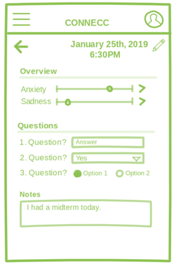

Project in Medical Informatics (2019 - 10 weeks)
About
Our project was based on the topic "Leveraging Patient Generated Data for Improving Patient Care."
Our proposed solution to combat the gap in mobile mental health services includes a comprehensive mental health application, Connecc. This will be a customizable, modular application that will aid the patient in communicating their thoughts and feelings to their therapist during sessions. During the period of time in between sessions, the patient will have the ability to record data pertaining to their mental health and have it displayed in the app in a comprehensible way. Based on a timeline set by the user, the app will generate summaries of the data collected in the time between sessions, and act as a middleman in the patient-therapist relationship.
We were required to conduct user surveys, administer usability tests, create a competitve analysis, create wireframes and mockups, and produce a final prototype design.
Project Website ⭧
Software/Resources used:


The Final Application

Logging your mood
• An essential part of any mood tracking app.• The user can rate different customized moods, categories, symptoms, metrics, etc. The user can also answer questions that have been input by the provider. They can add any additional notes, as well.
• What we improved:
○ Cleaner UI
○ Can rate the overall mood category (i.e. anxiety).
○ Do not have to rate all category metrics (like Anxiety's Focused to Distracted) when logging
○ Ability to change the time and date of the log
• What we added:
○ Provider questions

Data Visualization
Everything is simple and neatly labeled for the user and easy-to-navigate.
• Patients can see how they are doing and understand the data that they are seeing.
• The user can see charts of moods, behaviors, and symptoms for any given time period.
• Aids patients and providers in seeing helpful correlations that can aid them in identifying unhealthy behaviors.
Easy to read data visualization graphs, particularly relating to correlation, is important because it allows the user and therapist to see how one of their patient’s trackable metrics such as anxiety for instance may affect how strongly they rate their depression that day. This helps therapists locate the source of problems communicated by the patient.
In-session Summary
Our biggest, most defining feature.
• Quickly gives the provider all of the important information that the patient would normally give them at the beginning of a session.
• Data output can be completely customized by the patient or the provider.
• Saves time valuable session time that could be used for treatment instead and relays information to the provider in a useful and concise manner.
Our future plan for this app is to focus on perfecting this feature. We want providers to feel comfortable integrating it into treatment. Refining this feature will require extensive interviews with and observations of mental health providers.
In-session Summary
Give the power to the provider.
Connecc gives the provider the ability to create custom moods, categories, rating scales, etc. The app can be customized to best suit the needs of both the patient and provider.
Initial Mockups

Research
Pros and cons of current apps:
We downloaded and used multiple phone apps. We looked at apps that had a wide range of purposes and features including mood tracking, self-improvement, in-session usage, data visualization, and customizability. Almost all of the applications we tested did not incorporate all of the features we wanted to include in our app during our initial brainstorming sessions. We found one app, T2 Mood Tracker, that most closely matched the overall goal of Connecc and had most of Connecc's intended features.
While T2 Mood Tracker has the same overall purpose of our application, we compiled a list of improvements to be made. We included team member opinions and consumers opinions in the form of reviews on their app page in the Google Play store.
The Good:
• The concept: The overall concept has proved to be useful. The app has over 100k downloads from the Google Play store. "T2 Mood Tracker was developed by psychologists at Department of Defense National Center for Telehealth and Technology and has become popular with civilian as well as military and veteran patients."
• Categories and rating scales: The user can create new mood categories and new rating scales to attribute to those categories.
The Bad:
• Data output: The results are cluttered, confusing, and have a non-ideal color scheme.
• Not fully customizable: Users cannot delete pre-made mood categories and scales. The app only offers to hide infrequently used categories.
Forced rating: Users have to rate all metrics under a mood category.
• Screenshots: Users cannot screenshot inside the application. Forces the user to use the output feature if they want to share their results.
Negative feedback from user testing:
• Data display: "While you can submit multiple entries per day it is really difficult with the graph and really is difficult to see."
• Data UX: A way to optimize or customize the colors would be great. It can get pretty hard to tell the difference, and for a colorblind person probably impossible.”
Gap Analysis
Lack of customizability• There are no apps that are 100% customizable for the individual user and in a way that ideal for the mental health provider.
Not dual-purpose
• There are no current apps that take what both the user and the therapist wants into account to help facilitate patient visits.
No correlations
• This type of co-interaction between different tracking metrics is currently not available on the market.
No all-in-one app
• Having to look at one app for sleep habits, another for mood tracking, and another for a personal diary makes it difficult for the user as they have to juggle between all their different apps to find the data they need during therapist visits